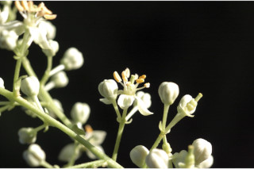
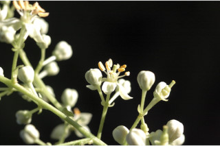

| Leaves : | Leaves compound , usually imparipinnate , sometimes paripinnate , cluster at twig ends, alternate , spiral , 13-26 cm long; rachis terete , grey pubescent , sometimes glabrescent ; petiolule 0.2 cm long; leaflets 7-13 pairs, 2.5-8 (-12) x 1.3-3.5 (-6.5) cm, generally increase in size towards apex , ovate with unequal sides, apex acuminate with retuse tip, base asymmetric , margin entire to crenulate , chartaceous , glandular punctate , usually grey pubescent on nerves and midrib on both surfaces, sometimes glabrescent ; midrib raised above; secondary_nerves 7-11 pairs; tertiary_nerves broadly reticulate . |


 
